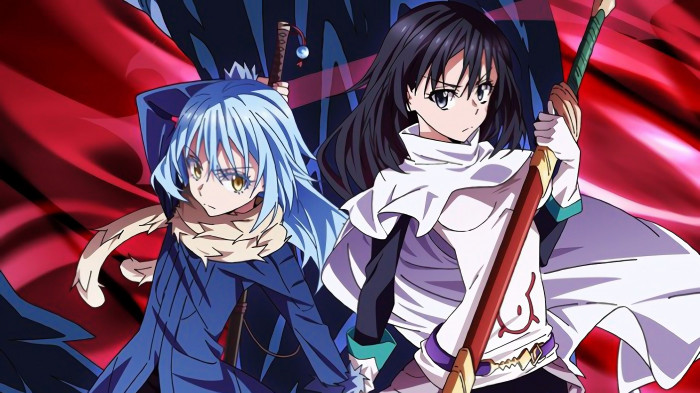
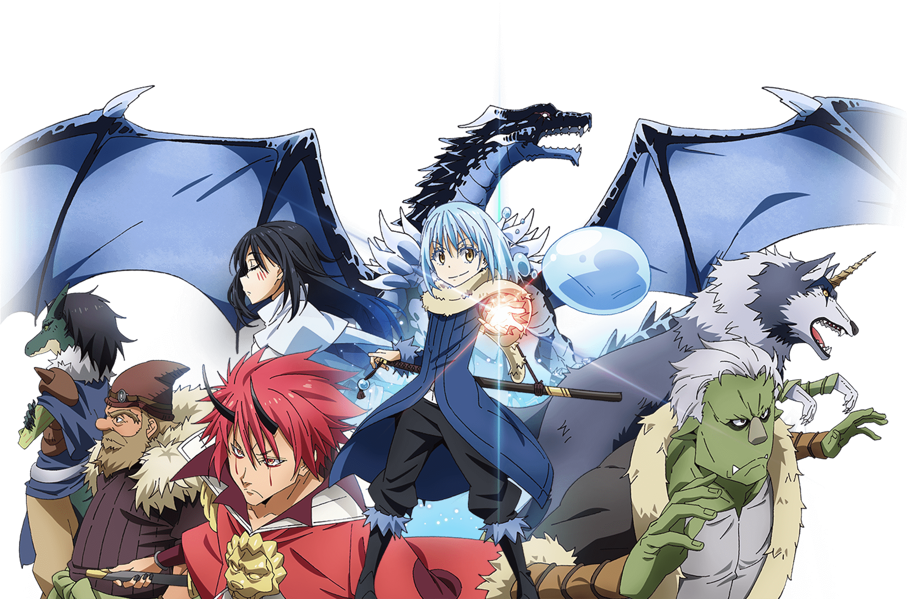
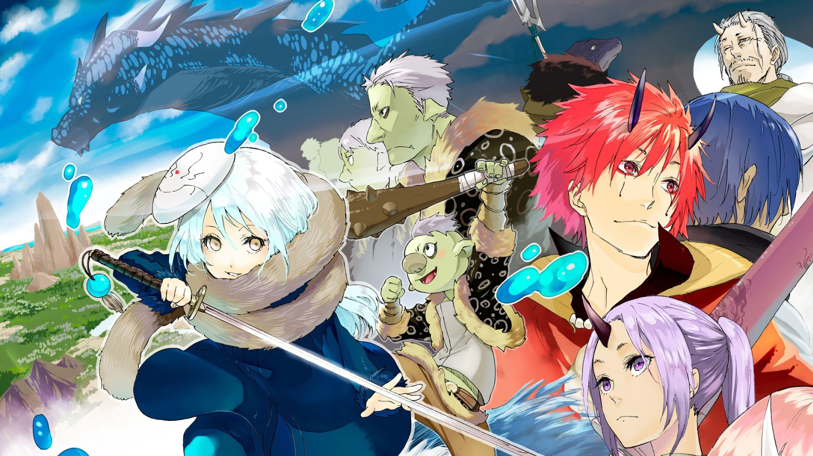
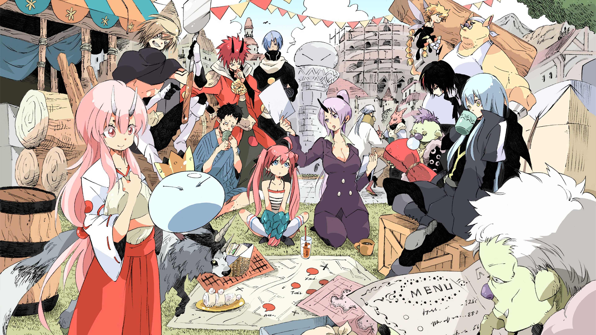

Aquella vez que me convertí en Slime (転生したらスライiだった件, Tensei Shitara Slime Datta Ken) es un anime basado en las novelas ligeras y en el manga del mismo nombre que ha su vez se basó en su novela web. El anime ha sido producido por 8-Bit y consta de 25 episodios. La serie se retransmitió el 9 de julio del 2022. Una segunda temporada se estrenó el 12 de enero del 2021
Mikami Satoru, de solo 37 años de edad, se encuentra estancado en un trabajo sin futuro, infeliz con su vida diaria, pero después de morir a manos de un ladrón, despierta en un reino fantástico... ¡como un monstruo Slime! Como se aclimatará a su nueva existencia, sus hazañas con los otros monstruos desencadenan una serie de eventos que cambiarán su nuevo mundo para siempre.

Antes conocido como Mikami Satoru, es el principal protagonista de Tensei Shitara Slime Datta Ken]. Es el fundador y rey del reino monstruo Tempest del "Gran Bosque de Jura" y es considerado como uno de los más poderosos Señores Demonio entre Los Señores Demonios de las Ocho Estrellas: Octagrama, así como el único Gran Señor Demonio conocido actualmente. También es un socio y mejor amigo del "Verdadero Dragón" Veldora Tempest.
Last updated 3 mins ago

Es el cuarto dragón verdadero nacido. Él está conectado con Rimuru por una promesa. Él fue el que nombró a Rimuru, otorgándole la Protección Divina de Cresta de la tormenta , mientras que Rimuru les dio a ambos sus apellidos como símbolo de su estado como iguales y de una profunda amistad..
Last updated 3 mins ago

es un Majin al servicio de Rimuru Tempest . Es el Ministro de Defensa de la Federación Jura Tempest, actuando como Comandante en Jefe de sus fuerzas armadas durante la guerra. Ocupa un lugar en los Doce Guardian Lords , así como en los Big Four , siendo su líder y contado como uno de los tres subordinados más fuertes de Rimuru, junto con Diablo y Zegion.
Last updated 3 mins ago

es un majin al servicio de Rimuru Tempest después de haber sido nombrado por él. Ella esla hermana menor de Benimaru y es la principal asesora económica de Rimuru junto con Rigurd . Ella reside en la ciudad de Rimuru de la Jura Tempest Federation ..
Last updated 3 mins ago

Es el Primer Secretario de Rimuru Tempest y un ejecutivo dentro de la alta dirección de la Federación Jura Tempest . Se cuenta en las filas de los Doce Guardian Lords y Big Four , liderando su propio ejército personal, los Yomigaeri . Ella reside en la capital de Tempest , Rimuru City ..
Last updated 3 mins ago

pertenece al tercer grupo de subordinados nombrados por Rimuru Tempest . Vive en la Ciudad Capital de la Federación Jura Tempest : Rimuru City . Un anciano maestro de la espada cuya habilidad ya era legendaria incluso como un ogro sin nombre , pero después de ser aceptado y nombrado por Rimuru, solo se volvió más fuerte..
Last updated 3 mins ago

es un Majin que está al servicio de Rimuru Tempest después de haber sido nombrado por él. Se desempeña como Ministro de Inteligencia en Tempest y la fiel sombra de Rimuru. También es el líder del Escuadrón Sombra de la Federación Jura Tempest ..
Last updated 3 mins ago
es un Oni y es el mejor herrero de la Federación Jura Tempest .
Last updated 3 mins ago

también conocida como "Shizu" (シ ズ) en la adaptación del anime, fue la compañera del Héroe anterior y una Invocada japonesa. También es conocida como la "Monarca de las explosiones", una aventurera de rango superior de la sede de la Asociación de la Libertad y la maestra formal de los estudiantes de la Clase S de la Academia de la Libertad. También fue mentora de varios excelentes alumnos que se convirtieron en importantes figuras de la sociedad.
Last updated 3 mins ago

es la hija de Veldanava y uno de los Demon Lords de primera generación . Es la mejor amiga de Rimuru Tempest y es una aliada importante en toda la serie..
Last updated 3 mins ago

es uno de los siete Demonios Primordiales y un Ejecutivo de la Federación Jura Tempest , sirviendo como secretario y Mayordomo de Rimuru Tempest . Es el líder de los Números Negros y es el subordinado más poderoso de Rimuru entre los Doce Guardianes ..

es una bestia mágica que fue nombrada y ahora está al servicio de Rimuru Tempest . Es un subordinado extremadamente cariñoso y leal de Rimuru, que casi siempre reside a la sombra de su maestro y absorbe su energía hasta que se le pide o cuando es necesario. Es el líder del Clan Star Wolf y el hijo del anterior jefe de los Direwolves . Se cuenta entre las filas de los Doce Señores Guardianes.
Last updated 3 mins ago
Last updated 3 mins ago
Last updated 3 mins ago